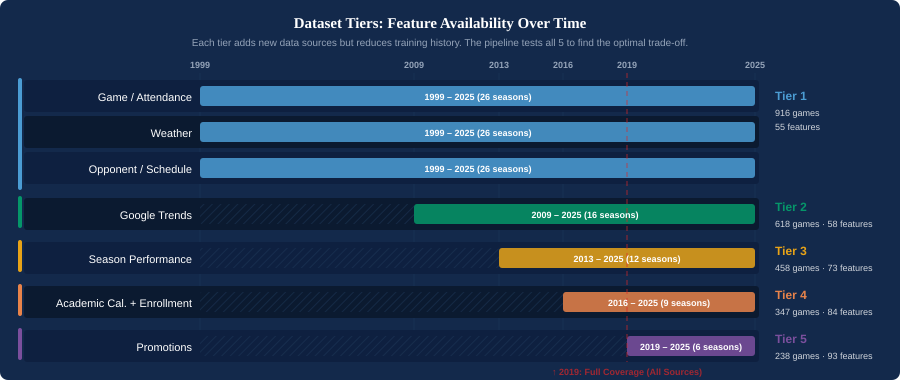
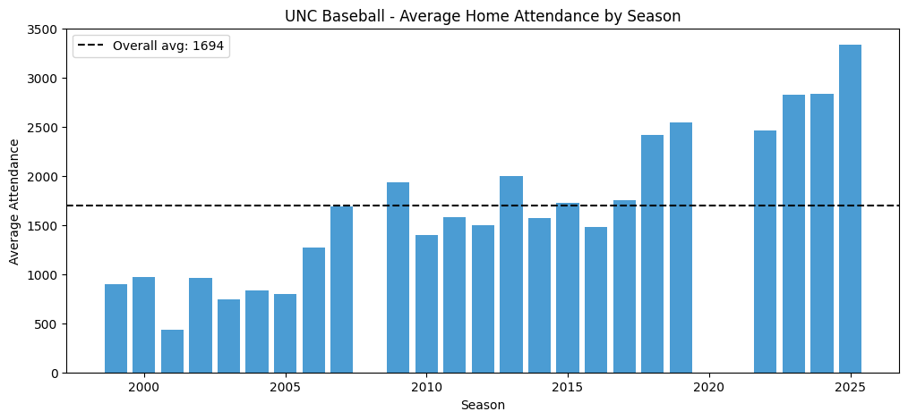
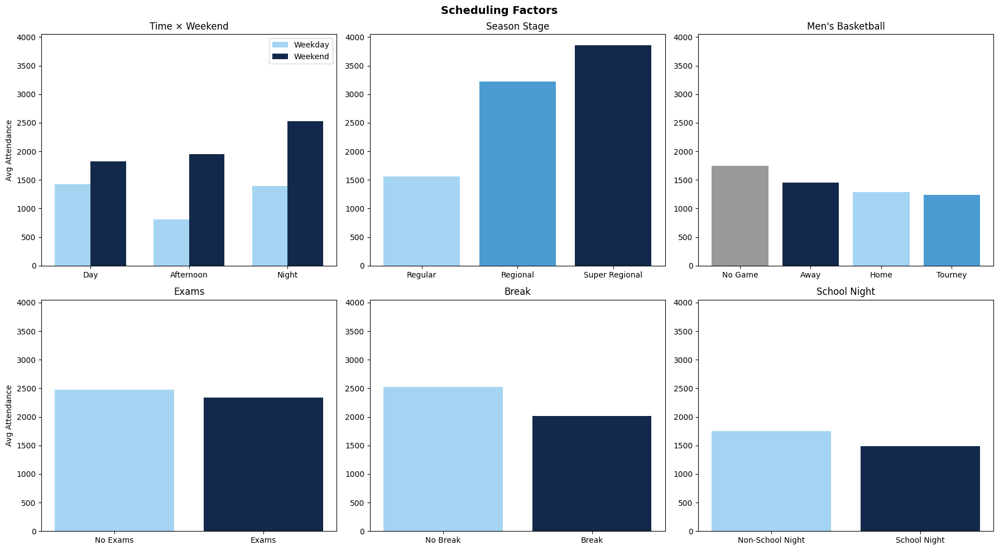
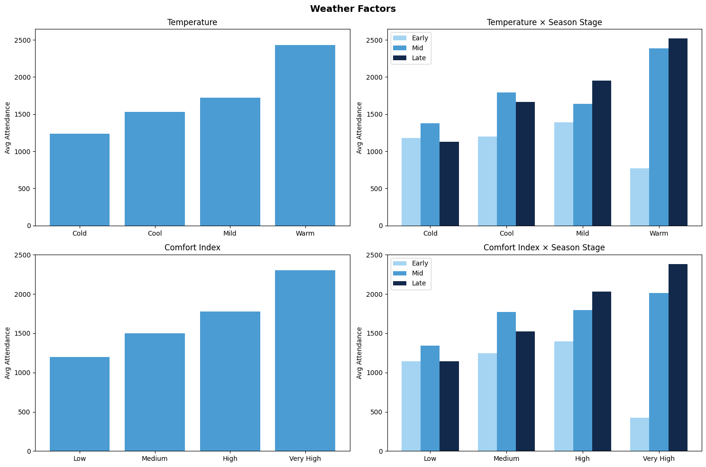
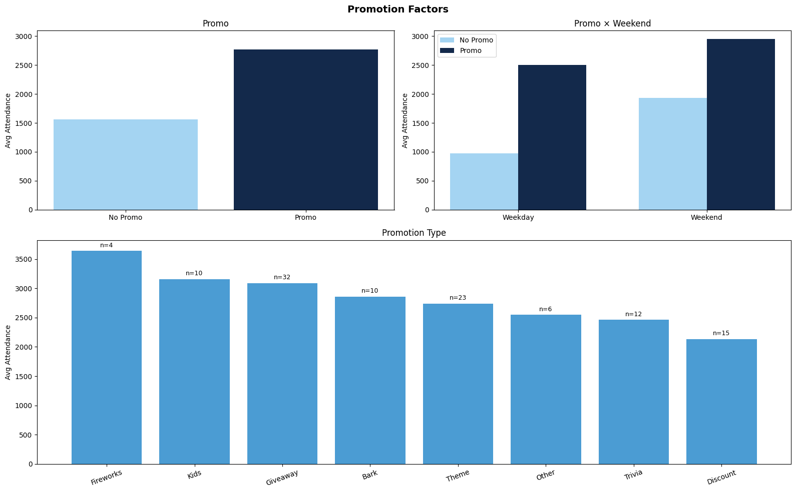
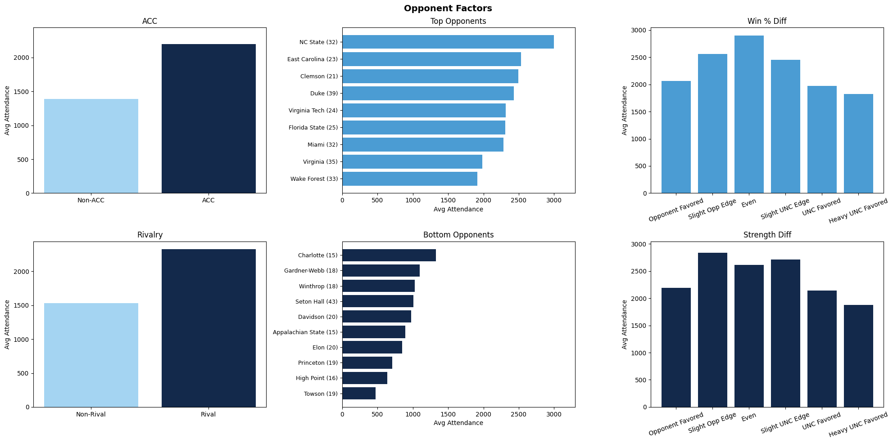
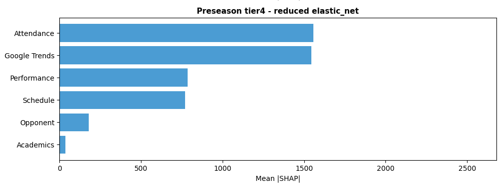
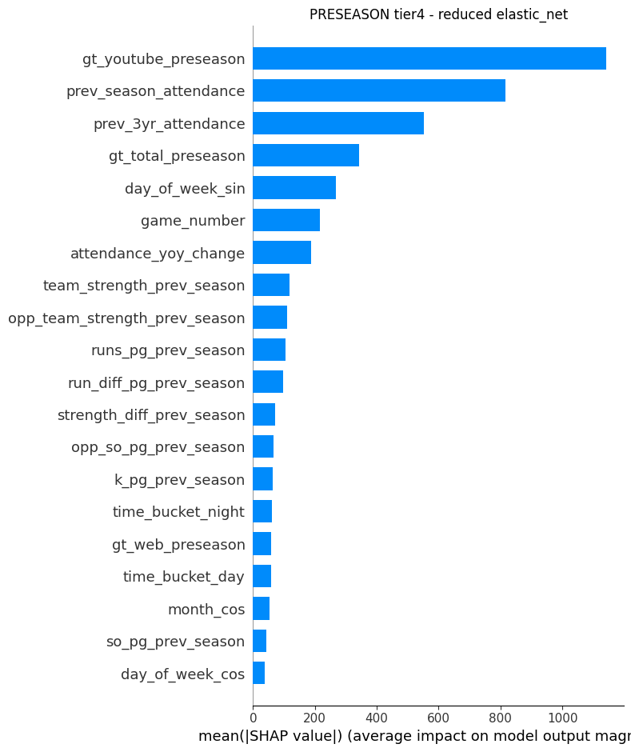

UNC Baseball Attendance Forecasting
A machine learning framework and Streamlit decision-support application for forecasting UNC baseball home-game attendance using historical attendance, opponent context, scheduling features, weather, academic calendar timing, Google Trends, promotions, and team performance data.
Project context
Problem
UNC Athletics needed a more proactive way to forecast game-day attendance and support decisions around staffing, marketing, concessions, promotions, and operations. Historical averages alone do not capture how opponent strength, schedule timing, weather, academic calendar context, and fan interest interact at the game level.
My role
I led data cleaning, feature engineering, master dataset integration, backward feature elimination, weighted cross-validation, preseason workflow adaptation, and additional weather- and attendance-related feature engineering.
Key results
| Forecast context | Best tier | Model | RMSE | MAE | R² | MAPE | Within 500 | vs. baseline |
|---|---|---|---|---|---|---|---|---|
| Preseason | Tier 4 | Elastic Net | 406 | 330 | 0.6128 | 11.6% | 82% | +38.8% |
| Two-day-ahead | Tier 5 | Elastic Net | 326 | 260 | 0.8048 | 9.1% | 88% | +48.0% |
Data and feature design
The project used five feature tiers to evaluate the tradeoff between more historical data and richer contextual features. Lower tiers preserved longer historical windows, while higher tiers added Google Trends, performance, academic calendar, enrollment, and promotion features.

Feature groups
Schedule and game context, opponent characteristics, attendance history, academic calendar timing, fan interest signals, UNC/opponent performance, weather, promotions, and geographic/travel context.
Forecast horizons
Preseason models use only information available before opening day. Two-day-ahead models incorporate near-term information such as weather forecasts, current-season performance, recent attendance, and updated fan-interest signals.
Exploratory analysis






Modeling workflow

Models tested
Linear Regression, Elastic Net, Random Forest, XGBoost, and LightGBM. Models were evaluated using weighted rolling cross-validation to better reflect real forecast deployment.
Validation strategy
Seasons 2020 and 2021 were excluded due to COVID-era restrictions, and 2008 was excluded due to stadium reconstruction. Evaluation emphasized 2024 and 2025, with forward-looking 2026 predictions.
Interpretability




Takeaways
- Preseason forecasts support long-range planning for staffing, budget, concessions, and promotions.
- Two-day-ahead forecasts improve tactical planning by incorporating current context and near-term weather.
- Feature richness helped most close to game day, while preseason forecasting required a balance between richer context and historical sample size.
- The framework generalized to additional sports and institutions, though feature importance varied by venue and sport.